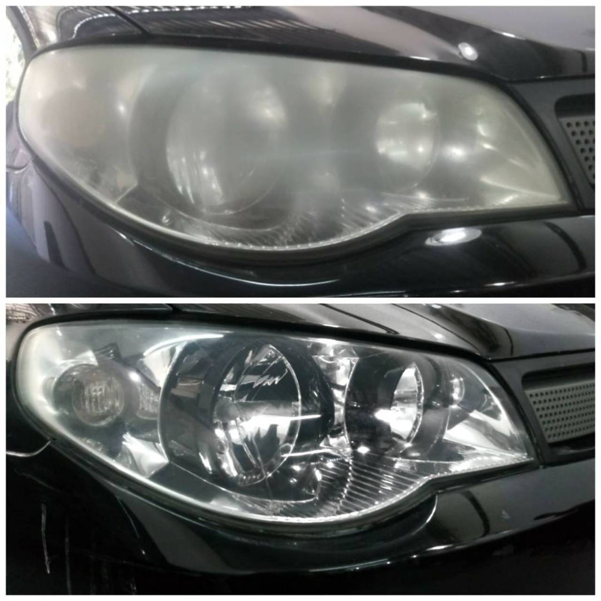
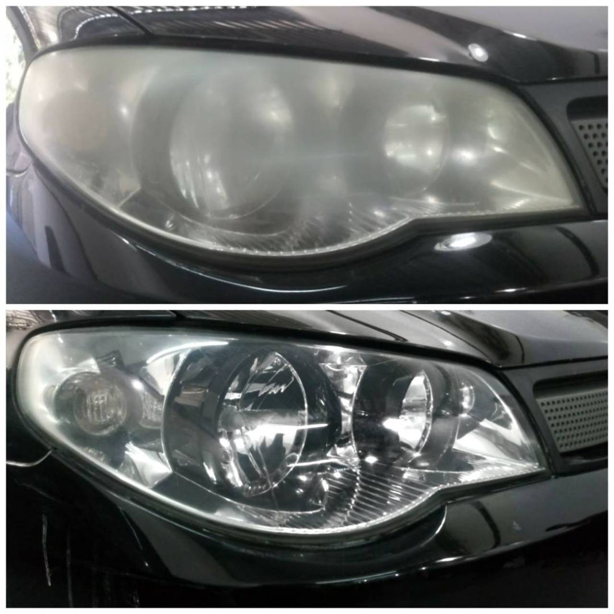

Sobre Nós
Na Ju's Automotive Aesthetic, nossa missão é transformar e preservar a estética do seu carro com excelência e dedicação. Somos especializados em serviços automotivos que vão além da simples limpeza: buscamos proporcionar uma experiência única, elevando o visual e a proteção do seu veículo.
Com anos de experiência no mercado e uma equipe altamente qualificada, oferecemos serviços de polimento, vitrificação, limpeza interna e restauração de faróis, entre outros, com o objetivo de garantir que o seu carro esteja sempre como novo. Trabalhamos com os melhores produtos do mercado e as mais avançadas técnicas para entregar resultados impecáveis.
Nosso compromisso é com a qualidade, a satisfação do cliente e o cuidado em cada detalhe. Sabemos que um carro bem cuidado reflete o estilo de vida de seu dono e, por isso, tratamos cada veículo com a atenção e respeito que ele merece.
Seja para dar aquele brilho extra, proteger a pintura ou restaurar a beleza do interior, a Ju's Automotive Aesthetic é a escolha certa para quem busca qualidade, confiança e um serviço personalizado.
 Vitrificação: Proteção duradoura para sua pintura.
Vitrificação: Proteção duradoura para sua pintura.
 
